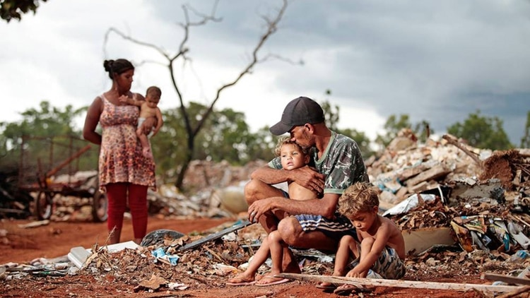

El hecho escalofriante es que no menos de 1.300 millones de personas viven con menos de 1 dólar al día todos los días. Esto nos dice todo: el mundo no está bien distribuido y es necesario realizar algunos cambios. Si no se toman medidas enérgicas, no se logrará el Objetivo del Milenio de erradicar el hambre y la pobreza extrema en el mundo establecido por las Naciones Unidas. La pobreza afecta a las personas de diferentes maneras según el grupo de edad, el género, la raza, la religión o el lugar de residencia. Especialmente los niños, por su dependencia física, emocional, económica y social y la falta de autonomía en sus familias e instituciones, son uno de los grupos más vulnerables a la pobreza. Para los niños de escasos recursos, la niñez es una serie de retrasos que nunca les permiten superarse o imaginarse un futuro mejor. La vida no viene con garantías como atención médica para enfermedades, calzado para ir a la escuela y recibir una educación. Las experiencias negativas a una temprana edad perjudican el desarrollo de un niño, dejándoles atrapados en un círculo vicioso de pobreza. Su apadrinamiento o donativo tiene un impacto positivo para los niños en las comunidades a las que servimos al brindares acceso a programas educativos, servicios médicos y dentales, talleres de formación profesional y más.